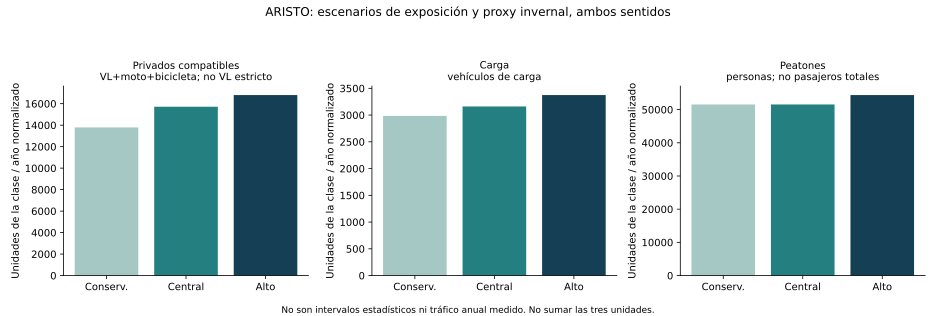

Etapa 2 · Bahía Jara–Levicán · 29 de octubre de 2026 · Entrega local reservada
Se usa el calendario de 2026, 365 días, como año normalizado de referencia sin crecimiento. No se reconstruye el tráfico efectivamente realizado durante 2026. ARISTO incluye primavera2025 y campañas2026; CITRA mide jornadas de verano/otoño2026. La conversión anual implica representatividad temporal y, en la barcaza, cumplimiento de una programación ordinaria que no está certificada por bitácoras.
Todos los valores anuales son cálculos o escenarios. «Observado asignado» identifica el origen del perfil OD de una cantidad física medida; no convierte la cifra anual resultante en un conteo anual observado. OD imputado y proxy temporal son dimensiones distintas y se conservan por separado.
Se emplean tres perfiles fuente ARISTO: primavera, verano y Normal de mayo. El calendario mantiene cuatro estaciones, pero invierno toma Normal como proxy autorizado. CITRA carece de primavera; su escenario anual utiliza otoño como proxy de primavera e invierno exclusivamente dentro de sus propios OD cubiertos. No utiliza distribución OD de usuarios del ferry.
| mes | dias | temporada_destino | perfil_ARISTO | perfil_CITRA | frecuencia_ordinaria_semana_sentido |
|---|---|---|---|---|---|
| 1 | 31 | Verano | Verano | Verano | 11 |
| 2 | 28 | Verano | Verano | Verano | 11 |
| 3 | 31 | Otoño | Normal mayo | Otoño | 11 |
| 4 | 30 | Otoño | Normal mayo | Otoño | 11 |
| 5 | 31 | Otoño | Normal mayo | Otoño | 8 |
| 6 | 30 | Invierno | Normal mayo (proxy invernal) | Otoño (proxy) | 8 |
| 7 | 31 | Invierno | Normal mayo (proxy invernal) | Otoño (proxy) | 8 |
| 8 | 31 | Invierno | Normal mayo (proxy invernal) | Otoño (proxy) | 8 |
| 9 | 30 | Primavera | Primavera | Otoño (proxy) | 8 |
| 10 | 31 | Primavera | Primavera | Otoño (proxy) | 8 |
| 11 | 30 | Primavera | Primavera | Otoño (proxy) | 8 |
| 12 | 31 | Verano | Verano | Verano | 11 |
Las observaciones no se suman como días distintos del año. Primero se obtiene un perfil por exposición, y luego se aplica al calendario indicado. Marzo/abril usan composición Normal, pero frecuencia alta; mayo usa frecuencia baja. Eso también es una transferencia estacional explícita. Los perfiles de primavera no corresponden a marzo/abril ni se completa invierno como si se hubiera encuestado.
A, referencia observada: conserva la asignación de encuestas de la misma fecha, sentido y clase; retiene todo F sin perfil en residual. Los extremos internacionales genéricos se etiquetan EXTERNO_NO_ESPECIFICADO, sin inventar zona.
B, referencia completada: conserva exactamente los mismos F y solo transfiere distribución de otro día comparable dentro de campaña/sentido/clase. El caso aplicado son cinco camiones del 1febrero PuertoIbáñez→ChileChico, con perfil del27enero basado en dos entrevistas. La sensibilidad A/B suprime esa transferencia, no cambia el flujo físico. Ningún peatón usa perfil de vehículo, ni un usuario terrestre recibe proporciones de ARISTO.
En la muestra medida de carga ambas versiones tienen29vehículos: A asigna22 y conserva7residuales; B agrega5ODimputados y conserva2residuales. El escaso Ndonante es una limitación, no una precisión estadística. Los120peatones de verano en sentido PuertoIbáñez→ChileChico siguen sin perfil; tampoco se fuerzan motos/bicicletas sin donantes. Todos los balances por fecha, sentido y clase se conservan.
La unidad mínima del InformeARISTO §2.2.6 es semanal, a partir de flujo medio por servicio. El Excel no identifica inequívocamente el zarpe de cada fila. Por eso se usa evidencia de programación y se declara la hipótesis de cobertura de esas operaciones: Q_mes = ΣF_muestra / operaciones_programadas_muestra × frecuencia_ordinaria_semana / 7 × días_mes. La composición OD y los residuales se multiplican por el mismo coeficiente.
| campana | sentido_cruce | fechas_medidas | dias_con_medicion | filas_conteo | operaciones_programadas_fechas_muestra | operaciones_efectivas_certificadas | fuente_denominador_programado | advertencia |
|---|---|---|---|---|---|---|---|---|
| Otoño | Chile Chico → Puerto Ibáñez | 2026-05-10 | 1 | 1 | 1 | False | NAVIERA_MAY2026+ARISTO169 | Plan no certifica bitacora efectiva; una fila no se identifica automaticamente como un zarpe. |
| Otoño | Puerto Ibáñez → Chile Chico | 2026-05-10 | 1 | 1 | 1 | False | NAVIERA_MAY2026+ARISTO169 | Plan no certifica bitacora efectiva; una fila no se identifica automaticamente como un zarpe. |
| Primavera | Chile Chico → Puerto Ibáñez | 2025-11-08 | 1 | 2 | 2 | False | ARISTO78 | Plan no certifica bitacora efectiva; una fila no se identifica automaticamente como un zarpe. |
| Primavera | Puerto Ibáñez → Chile Chico | 2025-11-08 | 1 | 2 | 2 | False | ARISTO78 | Plan no certifica bitacora efectiva; una fila no se identifica automaticamente como un zarpe. |
| Verano | Chile Chico → Puerto Ibáñez | 2026-02-01 | 1 | 2 | 2 | False | ARISTO38+138 | Plan no certifica bitacora efectiva; una fila no se identifica automaticamente como un zarpe. |
| Verano | Puerto Ibáñez → Chile Chico | 2026-01-27|2026-02-01 | 2 | 2 | 3 | False | ARISTO38+138 | Plan no certifica bitacora efectiva; una fila no se identifica automaticamente como un zarpe. |
Primavera: dos horarios por sentido en la planificación del08noviembre, tabla78. Verano: la tabla38 programa una salida el martes y dos el domingo; para PuertoIbáñez→ChileChico se usan tres operaciones entre27enero y1febrero, aunque haya solo dos filas de conteo. ChileChico→PuertoIbáñez tiene dos operaciones programadas el1febrero. Normal10mayo: Naviera Austral publica una salida por sentido. Son programas, no prueba de salidas efectivas.
La frecuencia ordinaria11dic–abr/8may–nov por sentido fue confirmada previamente por el usuario. El itinerario Naviera de04–10mayo publica nueve tramos por sentido sin clasificar ordinario/especial: se conserva como contraste, no se cambia automáticamente la frecuencia ordinaria ni se inventa una cuota de carga peligrosa. No existe bitácora o boletaje completo que certifique la exposición efectiva ni permita introducir un porcentaje de cancelaciones meteorológicas.
La lectura «total de día muestreado × días del año» se entrega en la tarea temporal como contraste, no como central: los días medidos con dos salidas no representan automáticamente un calendario de8/7salidas diarias. La lectura de una fila como un zarpe tampoco se aplica sin rotularla. Los escenarios son hipótesis de exposición y estacionalidad, no intervalos estadísticos ni toda la incertidumbre posible. No calibran suspensiones o carenas efectivas de2026.
Ambos sentidos sumados dentro de cada clase y escenario; no sumar las clases entre sí. La vista PRIVADOS_COMPATIBLES combina VL+moto+bicicleta de primavera/verano con VP de Normal; nunca se suma otra vez con sus componentes ni se denomina VL estricto.
| version | escenario | segmento | flujo_fisico_anual | observado_OD_anualizado | imputado_OD_anualizado | residual_anualizado | fraccion_imputada_OD | fraccion_residual |
|---|---|---|---|---|---|---|---|---|
| B | alto | CAM | 3,373.714 | 2,878.714 | 353.571 | 141.429 | 0.105 | 0.042 |
| B | alto | PEATON | 54,371.000 | 45,123.143 | 0.000 | 9,247.857 | 0.000 | 0.170 |
| B | alto | PRIVADOS_COMPATIBLES | 16,801.714 | 16,163.250 | 0.000 | 638.464 | 0.000 | 0.038 |
| B | central | CAM | 3,161.571 | 2,784.429 | 235.714 | 141.429 | 0.075 | 0.045 |
| B | central | PEATON | 51,542.429 | 45,123.143 | 0.000 | 6,419.286 | 0.000 | 0.125 |
| B | central | PRIVADOS_COMPATIBLES | 15,717.429 | 15,224.425 | 0.000 | 493.004 | 0.000 | 0.031 |
| B | conservador | CAM | 2,983.880 | 2,606.737 | 235.714 | 141.429 | 0.079 | 0.047 |
| B | conservador | PEATON | 51,542.429 | 45,123.143 | 0.000 | 6,419.286 | 0.000 | 0.125 |
| B | conservador | PRIVADOS_COMPATIBLES | 13,793.288 | 13,300.284 | 0.000 | 493.004 | 0.000 | 0.036 |

La proporción imputada se refiere a distribución OD; la expansión temporal afecta todos los componentes. Una cantidad residual anual también es estimada temporalmente a partir de un embarque medido, no un aforo anual. Las matrices incluyen las versiones A y B por separado.
Hay 5 combinaciones zonales/clase y 4 pares detallados/clase con dos campañas que admiten un escenario de365días de ventanas08–20. El resto conserva aportes de meses representados y anual faltante. La cifra anual de24h es faltante en todas las celdas.
Q_anual_12h = 90×perfil_verano + 92×perfil_otoño + 92×proxy_invierno + 91×proxy_primavera. Central: proxies desde el propio otoñoCITRA. Conservador: invierno multiplicado por razón PNC2024 Invierno/Primavera del corredor aproximado, por VL/CAM; primavera sigue como proxy otoñal. Alto=Central porque no hay incremento superior cuantitativo respaldado sin cambiar pantalla o introducir porcentajes.
PNCPC63/rama2(Ruta7,BifMurta) yPC64/rama1(Ruta265,MallínGrande–Guadal) contrastan la forma estacional, sin equivalencia exacta de ubicación, sentido, ventana o OD. Son conteos históricos publicados con su propia expansión; sus razones no validan un factor12→24. Los coeficientes genéricos MOP y perfiles urbanos no reemplazan un aforo interurbano24h compatible. Tampoco se certifica representatividad de fines de semana con jornadas laborales escasas.
| zona_origen | zona_destino | segmento | demanda_anual_ventana12h | demanda_anual24h | dias_con_campana_propia | dias_proxy_invierno_primavera | estado |
|---|---|---|---|---|---|---|---|
| 31 | 39 | CAM | 509.583 | No estimable / faltante | 182 | 183 | Escenario anual de ventana12h bajo proxies; no estimacion24h |
| 31 | 39 | VL | 5,276.591 | No estimable / faltante | 182 | 183 | Escenario anual de ventana12h bajo proxies; no estimacion24h |
| 33 | 39 | VL | No estimable / faltante | No estimable / faltante | 90 | 0 | Anual no estimable; aporte parcial de meses representados |
| 39 | 31 | CAM | No estimable / faltante | No estimable / faltante | 92 | 0 | Anual no estimable; aporte parcial de meses representados |
| 39 | 31 | VL | 3,477.792 | No estimable / faltante | 182 | 183 | Escenario anual de ventana12h bajo proxies; no estimacion24h |
| 39 | 34 | VL | No estimable / faltante | No estimable / faltante | 90 | 0 | Anual no estimable; aporte parcial de meses representados |
| 39 | 40 | VL | 4,645.491 | No estimable / faltante | 182 | 183 | Escenario anual de ventana12h bajo proxies; no estimacion24h |
| 40 | 39 | VL | 3,511.959 | No estimable / faltante | 182 | 183 | Escenario anual de ventana12h bajo proxies; no estimacion24h |
Se conserva la pantalla elegida en Etapa1 y las estimaciones alternativas. En ChileChico→RíoIbáñez, veranoVL, los controles comparables difieren3,73 frente25,07vehículos/12h; esa incertidumbre no desaparece por multiplicar días. Se entrega aparte y no se elige el mayor flujo ni se promedian controles para ocultarla. La distribución de localidades dentro de una zona puede cambiar entre campañas: el perfil zonal directo y el agregado de localidades comunes tienen distinto soporte y no se fuerza su igualdad.
No se completó la magnitud terrestre faltante: no se usan proporciones OD lacustres ni se extrapola la fracciónCITRA a todo el corredor. Un aporte parcial no es un límite estadístico del mercado total; el componente no observado sigue desconocido.
La base larga distingue bloque lacustre/terrestre, fuente, versiónOD, escenario, vista, zona, detalle, segmento, unidad y exposición. La tabla porOD presenta ambas referencias con faltantes explícitos y total_combinado nulo. Coincidencia de OD no implica compatibilidad temporal.
La auditoríaCITRA previa conserva109entrevistas elegibles sin alternativa ferry compatible en las trayectorias de referencia. Eso respalda la separación de corredores mediante inferencia topológica, pero no acredita deduplicación individual entre consultoras ni certeza del itinerario completo. No se añaden pantallas comunes a accesos del ferry y no se suman aforos en serie.
La unión de Etapa1 contiene67claves OD/campaña/clase, seis con flujo en ambas fuentes. Es una comparación de cobertura, no un total de demanda. El faltante de una fuente no se transforma en cero ni se rellena mediante la otra. VP no se homologa automáticamente a VL; los pasajeros de bus no reciben factores vehiculares.
Se mantienen nacionalidad declarada, patente y OD internacional como tres indicadores superpuestos. La nacionalidad peatonal no es residencia y la patente no es nacionalidad de ocupantes. Se conservaron5declaraciones extranjeras,10patentes extranjeras y13ODinternacionales en las264respuestasARISTO, sin sumarlos como personas distintas.
El Excel de factores incluye aportes anuales por categoría de indicador en estratos compatibles y su denominador físico de clase. La fracción asociada se refiere a perfil conocido, no a extranjeros totales. Se calcula también la parte sin caracterización, por ejemplo ante ausencia de entrevistas peatonales en una dirección estival. Los estados desconocidos permanecen explícitos. La versiónB solo imputa OD: no hereda nacionalidad, patente o residencia de los donantes. No se calcularon divisas, bienestar o beneficios sociales.
Podemos avanzar con proyecciones propias por bloque/segmento compatible y con costos generalizados, utilizando esta base como escenarios condicionados sin crecimiento ya incorporado. La captación puede estudiarse para los mercados efectivamente cubiertos, manteniendo sensibilidad de pantalla y exposición. No está respaldada todavía una captación única del mercado total ni cuotas entre ferry y tierra basadas en sumar estos anuales. Para ello hacen falta operación efectiva/denominador lacustre, factores horarios y cobertura terrestre, o escenarios posteriores explícitos del mercado desconocido. No se inicia ese trabajo en esta entrega.
Cuatro roles separados: A asignación/residual; B exposición/calendario; C anualizaciónterrestre/PNC; D compatibilidad. Las tareas independientes se ejecutaron en paralelo con un máximo de tres subagentes activos. No se reconstruyó red, geocodificó ni ejecutó Etapas07–13.
python etapa2_demanda_anual_20261029/integracion/consolidar_etapa2.py \ --anexos . \ --etapa2 etapa2_demanda_anual_20261029 \ --salida /tmp/ETAPA2_NUEVA_ENTREGA
El paquete contiene scripts de las cuatro tareas, pruebas y comandos para regenerar desde las cachés aprobadas. Se exige carpeta nueva, se controla espacio antes de escribir y se verifican los hashes de ambas entregas previas. La publicación aGitHub quedó cancelada; no se publican microdatos. Los únicos archivos retirados del intento de subida fueron sus temporales, no las entregas del proyecto.
Integración: 10.94s; 12 comprobaciones correctas. Originales y referencias aprobadas intactos. Los gráficos y tablas son escenarios de incertidumbre de la base, no crecimiento, captación o inducción.